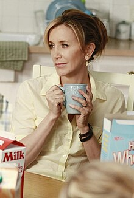
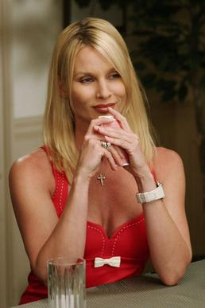
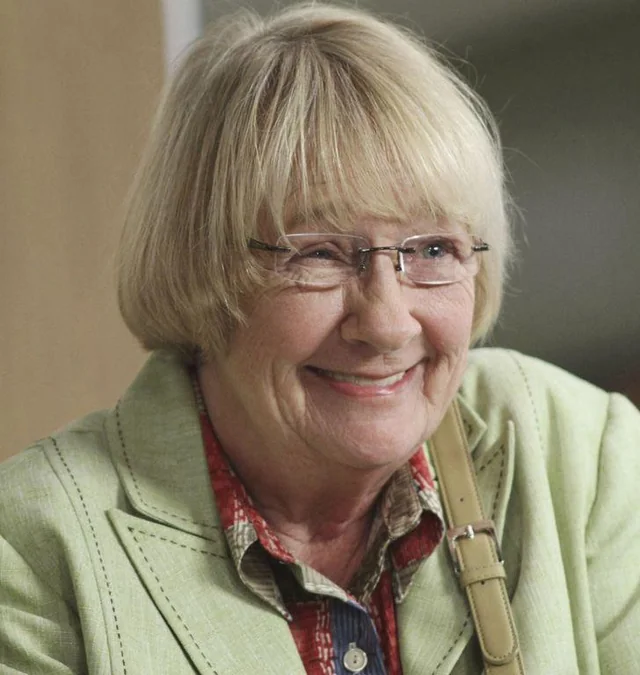

Sum Up
Sum Up| Sum Up | ||||||||
| Character | |
|||||||
Bree |
1-8 | Rex,Goerge,Peter,Orson,Karl,Keith and Trip | Andrew and Danielle (Rex had a secret son named Sam) | Rex and George drama | Kids drama | Her Second marriage and how it ended | Put on trial for murder | |
 Susan |
1-8 | Karl,Mike,Ron,Ian,Jackson | Julie and Mj (Mike's son Zach) | Her quest for Mike | Her and Mike's Breakups | Her bankruptsy and war with Paul | Her husnands death | |
Gabrielle |
1-8 | Carlos,John,Victor | Celia and Juanita (Her biological daughter Grace) | Her affair, both times | Her child journey | The Grace drama | Her Step Dad's death | |
|  Lyentte |
1-8 | Tom (Nearly Rick) | Porter,Preston,Parker,Penny,Polly (Tom's secret child Kayla) | Her struggles as a mom | Her cancer | Tom's secret child drama | Her marriage issues | |
|  Edie |
1-5 | Carl,Mike,Carlos,Dave (Her husbands before the show) | Travers | Her drama with Susan | Her trying to keep Carlos | Her relationship issues | Her marriage with Dave | |
Catherine |
4-6 | Wayne,Adam,Mike,Robin | Dylan (the real Dylan that died) | Her secret, and drama with Wayne | Her relationship with Mike | Her drama with Susan | Her becoming a lesbian | |
.webp) Renee |
7-8 | Doug and Ben (Tom for that one week) | None | Her first husband drama | Her past with Tom | Her relationship with Ben | Her friendship with Lynette and Bree | |
|  Karen |
1-8 | Gilbert and Roy | Iane | Her relationship with Lynette | Her keeping her dead husband in the basement | Her relationship with Roy | Her on her final days | |